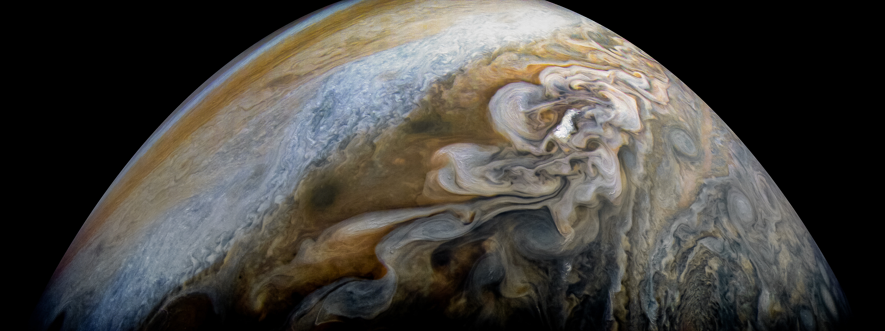

Jupiter is a reddish brown colored planet. Due to its size, it is categorized as a jovian planet. This means that it is gigantic compared to Earth. It has an equatorial diameter of about 88,900 miles.

There are stripes and swirls of cold and windy clouds of ammonia and water. The atmosphere is made up of helium and hydrogen. Jupiter cannot support life, however, some of Jupiter's moons have oceans under the crusts that could support life.
